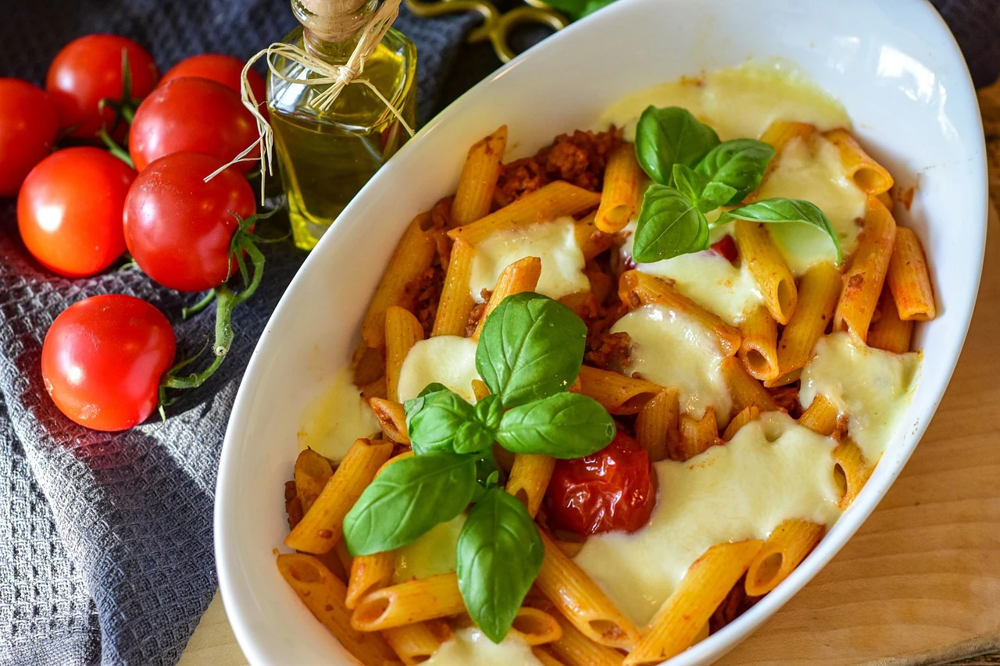

Nudelauflauf
| 500 | g Nudeln, (Penne Lisce) |
| 400 | g Kirschtomaten, halbiert |
| 2 | Paprikaschote (n), rot (gewürfelt) |
| 2 | Schalotte (n), fein gewürfelt |
| 2 | Zehe (n) Knoblauch |
| 400 | ml Sahne |
| 1 | EL Rosmarin, fein gehackt |
| 1 | kleine Fl. Chilisauce, süß und scharf |
| 500 | g Gehacktes, halb und halb |
| 2 | Zwiebel (n), gewürfelt |
| 200 | g Käse (Butterkäse) |
| 3 | EL Olivenöl |
| Salz und Pfeffer |
Nährwerte für die gewählte Anzahl an Portionen
Zubereitung
2 EL Öl in einer Kasserolle erhitzen und die Schalottenwürfel anschwitzen. Kirschtomaten und Rosmarin dazu
geben,
Knoblauchzehen hineinpressen und 15 Minuten köcheln lassen. Die Paprikawürfel und Sahne zufügen und weitere
10
Minuten milde kochen. Das Gemüse pürieren und mit Chilisauce, Pfeffer und Salz pikant abschmecken.
Nudeln nach Packungsanweisung gar kochen, in einen Durchschlag geben und gut abtropfen lassen. Auflaufform
mit
Öl
auspinseln, die Nudeln hinein geben und gut verteilen.
In einer großen Pfanne 1 EL Öl erhitzen und das Gehackte gründlich scharf anbraten. Zwiebelwürfel dazugeben
und ebenfalls scharf anbraten. Mit Pfeffer und Salz würzen. Wenn das Gehackte braun und krümelig geworden ist,
gleichmäßig auf den Nudeln verteilen, dabei etwas unterheben. Paprika-Tomatensauce darauf verteilen und
ebenfalls
unterheben.
Den Käse gleichmäßig in der Form verteilen, in den vorgeheizten Backofen geben und überbacken, bis der
Käse
braun geworden ist.